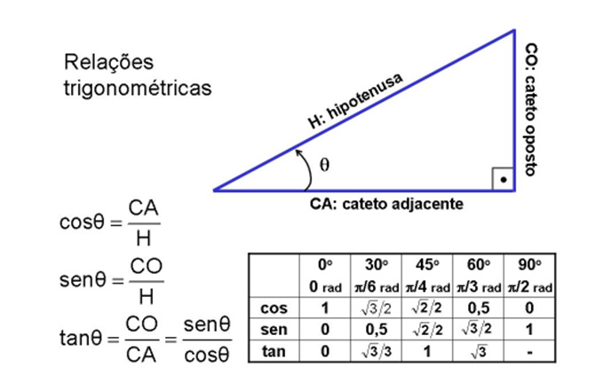
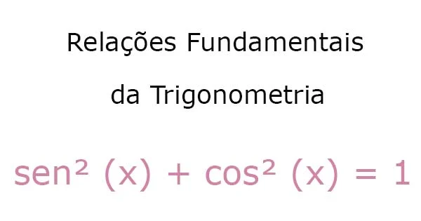
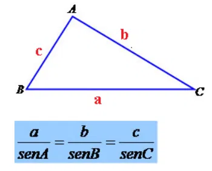
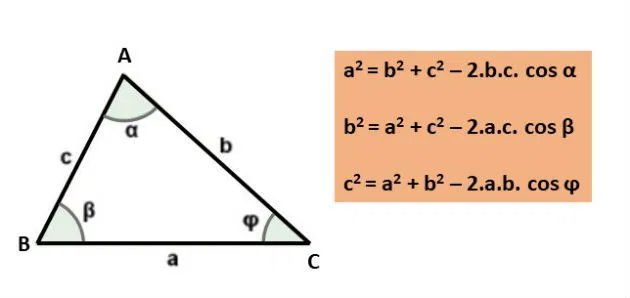

Trigonometria
A Trigonometria ajuda em varias partes do conhecimento, sendo mais notavel na matematica e na fisica, pode ser utilizada em triangulos retangulos e triangulos qualqueres.
Principais funções: Seno, Coesseno e Tangente, representados por sen, cos e tan, respectivamente.
Relação Fundamental da Trigonometria
Essa relação, provada pela circuferencia unitaria, define muitas propriedades da trigonometria, sendo util em varios aspectos, tanto para descobrir o valor de funções de angulos desconhecidos e até para circunscrever um triangulo de lados seno e cosseno dos mesmos angulos.
Lei dos Senos
Esse teorema cria uma relação com a função seno em um triangulo que não prescisa ser um triangulo retangulo, ou seja, qualquer triangulo, assim possibilitando muitas coisas.
Para complementar, essa igualdade pode ser igualada a 2*R, em que, o R seria o Raio da circuferencia circuscrita ao triangulo.
Lei dos cossenos
Esse teorema mostra uma relação com a função cossenos com qualquer triangulo, apenas necessitando 2 lados e um angulo para descobrir o lado que falta.
Para curiosidade a fisica usa essa formula na soma de vetores, apenas trocando o -2ac*cos por +2ac*cos